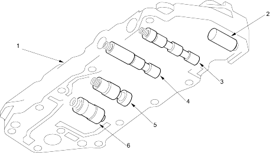

Honda Multi Matic Transmission/CVT
|
14-273 |
Secondary Valve Body
The secondary valve body contains the PH regulator valve, the lubrication regulator valve, the clutch reducing valve, the start clutch accumulator valve and the shift inhibitor valve.
The PH regulator valve maintains hydraulic pressure supplied from the ATF pump and supplies PH pressure to the hydraulic control circuit and the lubrication circuit. PH pressure is regulated at the PH regulator valve by the PH control pressure (PHC) from the PH control valve.
The lubrication regulator valve regulates lubrication pressure to the hydraulic circuit.
The clutch reducing valve receives PH pressure from the PH regulator valve and regulates the clutch reducing pressure (CR).
The start clutch accumulator valve stabilises the hydraulic pressure that is supplied to the start clutch.
The shift inhibitor valve switches the fluid passage to switch the start clutch control from electronic control to hydraulic control when the electronic control system is faulty.
 |
|